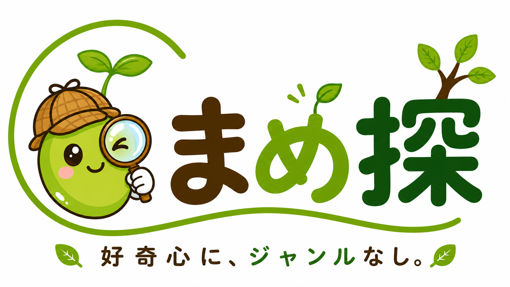

MAMETAN RESEARCH
まめ探
気になれば、それがテーマ。
気になったことを、楽しく調べて、とことん深掘り。 ジャンルにとらわれず、いろんな「なんで？」を探究します。
好奇心に、ジャンルなし。
AI、SEO、時事、防災、暮らし、グルメ、商品レビュー、 都市伝説、オカルト、スピリチュアル。
世の中には、気になることがたくさんあります。 まめ探は、ジャンルを決めてから調べるのではなく、 「これ、なんだろう？」から探究を始めます。
調べる
気になったことを、そのままにしない。 まずは情報を集めます。
深掘りする
表面だけでは終わらせず、 もう一歩先まで追いかけます。
楽しむ
難しいことも、できるだけ分かりやすく。 探究する過程そのものを楽しみます。